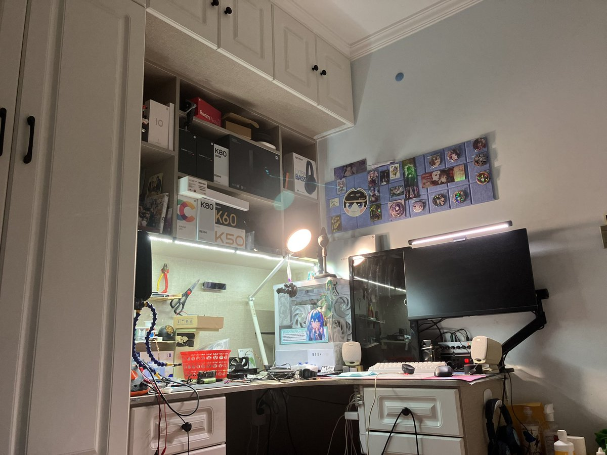
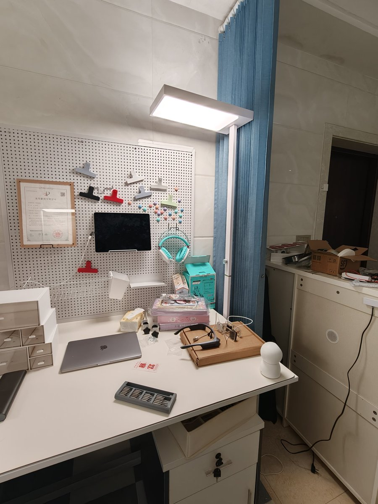
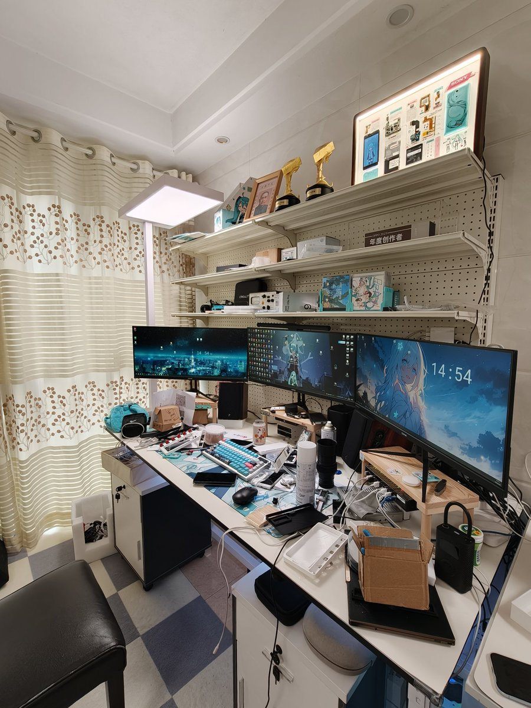
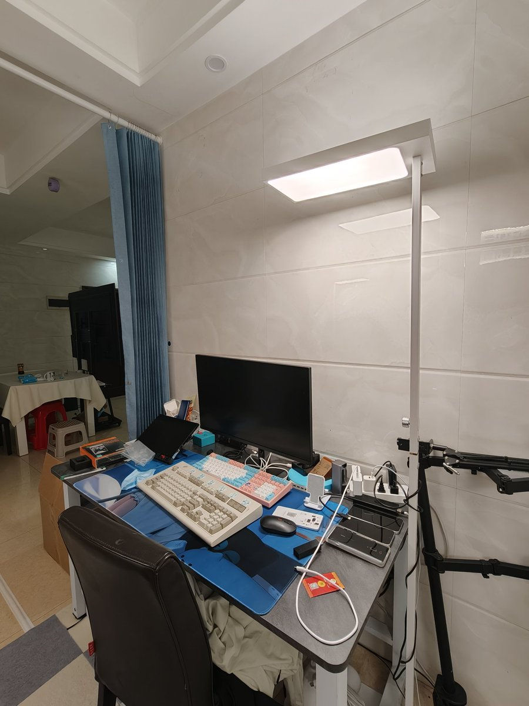

夜桜侵峰～
@Minecraftxfj
@jlxc2001 桌子上用的小米的灯感觉很舒服🤔设置了屏幕挂灯的开关联动整个桌子的灯，有点想在卧室主灯用这种大路灯了




江灵夏草
@jlxc2001
一般租的房子自带的灯都是，白平衡偏蓝，频闪瞎眼，色显超低，我待在这种灯光下就不舒服，况且还会显得整个房间很压抑，换灯又太麻烦了，所以我买了这种大路灯，色显指数98以上，可自定义色温，还可以设置白天、夜间不同的色温。换了这个灯之后，感觉幸福感都提高了不少。 https://t.co/I3xizCc9UI